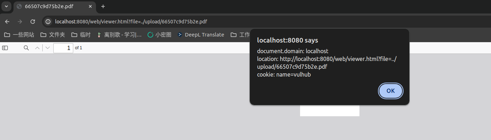

PDF.js Arbitrary JavaScript Code Execution (CVE-2024-4367)¶
PDF.js is a Portable Document Format (PDF) viewer that is built with HTML5.
In the PDF.js version prior to 4.1.392, a JavaScript code injection was found. This bug allows an attacker to execute arbitrary JavaScript code as soon as a malicious PDF file is opened.
References:
Vulnerable environment¶
Execute following command to start a server that contains PDF.js 4.1.392:
docker compose up -d
After the server is started, browse http://your-ip:8080 you will see an uploading page.
Vulnerability reproduce¶
Upload malicious PDF file poc.pdf to trigger the XSS:
